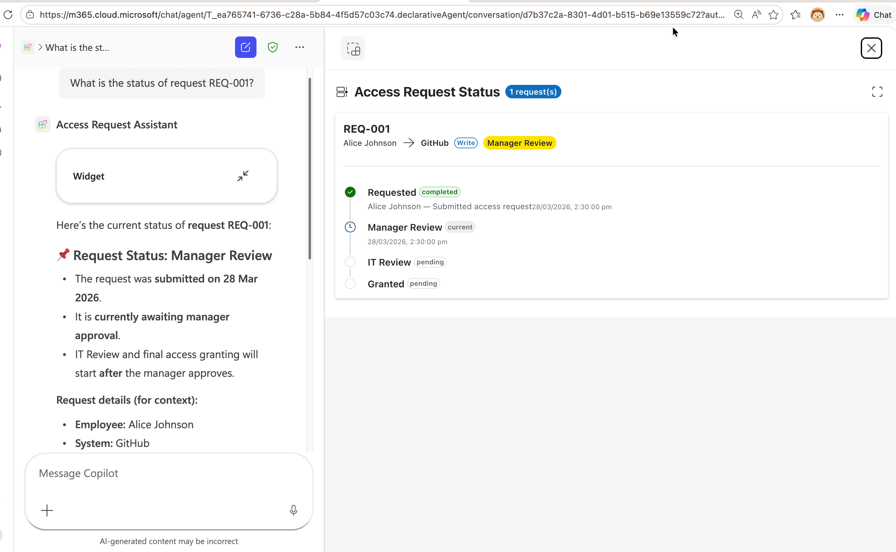
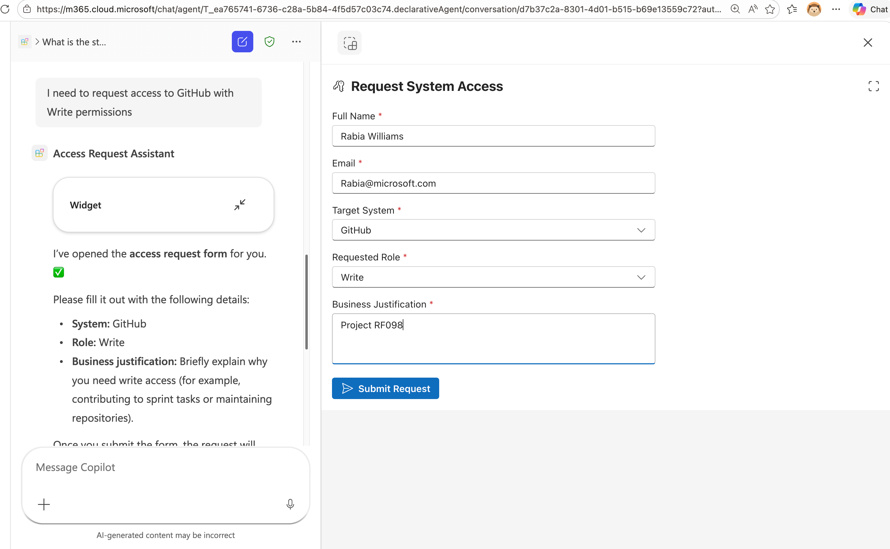
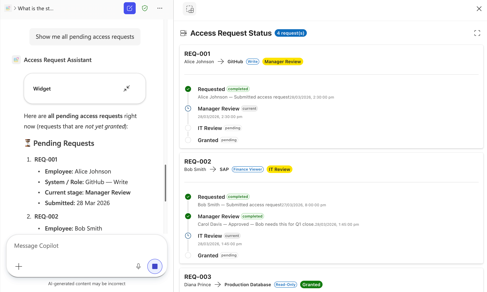

Lab 11: Build an MCP App with Interactive Widgets
Key concepts before you build
In this lab, you'll run a Model Context Protocol (MCP) app that powers an Access Request & Approval Workflow with interactive widgets rendered directly in the AI agent's response. You'll explore the existing tools, add a new Status Timeline widget, and integrate the MCP server into a Declarative Agent using Microsoft 365 Agents Toolkit.
Scenario
� What Are MCP Apps with Interactive Widgets?
Standard MCP tools return plain text or JSON, useful for data retrieval, but limited when users need to fill out forms, review dashboards, or interact with visual components. MCP apps extend the Model Context Protocol to deliver interactive UI widgets directly inside the AI agent's response, turning a chat conversation into a full application experience.
Why Interactive Widgets?
Traditional AI agent responses are text-based. When an agent retrieves data, it can summarize it in a message but users often need to do something with that data: submit a form, approve a request, explore a chart, or drill into details. Interactive widgets solve this by rendering rich, functional UI components alongside the agent's response:
- Forms and inputs — employees can fill out structured data without leaving the conversation
- Dashboards and visualizations — display KPIs, timelines, and status indicators with color-coded visual cues
- Action panels — managers can approve, reject, or take action directly from the widget
- Fullscreen mode — widgets can expand to fullscreen for complex interactions
Cross-Platform Support
One of the key benefits of building MCP apps is portability across AI platforms. The same MCP server with interactive widgets works as a connector in:
| Platform | SDK | Status |
|---|---|---|
| ChatGPT | OpenAI Apps SDK | Supported |
| Claude | MCP Apps SDK | Supported |
| Microsoft 365 Copilot | MCP Apps SDK (via Declarative Agents) | Supported |
Microsoft 365 Copilot supports UI widgets created using both the MCP Apps standard and the OpenAI Apps SDK, meaning widgets you build for ChatGPT can also run in Copilot and vice versa. The platform provides a component bridge that maps capabilities between the two SDKs.
This means you can build once and deploy across multiple AI hosts, reaching users wherever they work.
Exercise 1: Set Up and Run the Base MCP App
In this exercise, you'll clone the project, install dependencies, seed sample data, and start the MCP server.
Step 1: Clone the Repository
Download the MCP app source code directly:
Once downloaded, extract the zip file, then open the extracted approval-mcpapp folder in VS Code:
- Open VS Code
- Go to File → Open Folder and select the extracted
approval-mcpappfolder - Open a new Terminal in VS Code (Terminal → New Terminal)
All terminal commands in this lab should be run inside this VS Code terminal.
Step 2: Install Dependencies
Install all required packages:
npm install
This installs key dependencies:
@modelcontextprotocol/sdk— MCP protocol implementation@modelcontextprotocol/ext-apps— MCP Apps SDK for interactive widgets@fluentui/react-components— Fluent UI React component library@azure/data-tables— Azure Table Storage client (used with Azurite emulator)express— HTTP server frameworkzod— Runtime type validationvite/vite-plugin-singlefile— Builds each widget into a single self-contained HTML file
Step 3: Start Azure Storage Emulator
The app uses Azurite (a local Azure Table Storage emulator) to store access request data. In Terminal 1, start the emulator:
npm run start:azurite
You should see:
Azurite Table service is starting at http://127.0.0.1:10002
Keep this terminal running as it's your local database.
Step 4: Seed Sample Data
In Terminal 2, load the sample access requests:
npm run seed
You should see:
✓ upserted request REQ-001 (Alice Johnson)
✓ upserted request REQ-002 (Bob Smith)
✓ upserted request REQ-003 (Diana Prince)
✓ upserted counter requestId = 4
✓ Seed complete.
The sample data includes three access requests at different stages:
| Request | Employee | System | Status |
|---|---|---|---|
| REQ-001 | Alice Johnson | GitHub | Manager Review |
| REQ-002 | Bob Smith | SAP | IT Review |
| REQ-003 | Diana Prince | Production Database | Granted |
Step 5: Build and Start the MCP Server
Still in Terminal 2, build the UI widgets and start the server:
npm start
You should see output indicating that the UI entry points were built and the server is running:
Found 2 UI entry point(s): approval-panel.html, request-form.html
Building ui/approval-panel.html...
Building ui/request-form.html...
✓ Built 2 UI entry point(s) successfully.
🚀 Access Request & Approval MCP Server listening on http://localhost:3001/mcp
Your MCP app is now running with two interactive widget tools.
Step 6: Examine the Project Structure
Key files and directories:
| Path | Purpose |
|---|---|
server.ts |
Registers all MCP tools and their UI widget resources |
main.ts |
Express server entry point, handles HTTP transport |
mock-data/requests.ts |
Data access layer for Azurite table storage |
src/request-form/App.tsx |
React widget — access request form |
src/approval-panel/App.tsx |
React widget — manager approval panel |
ui/ |
HTML entry points for each widget |
fixtures/ |
Sample JSON data for seeding |
build-ui.mjs |
Builds each widget into a single self-contained HTML file |
Take a moment to review server.ts. Notice how each widget tool is registered using registerToolWithUI(), which pairs:
- A tool (callable by the AI agent) that returns structured data
- A UI resource (an HTML file) that renders the data as an interactive widget
registerToolWithUI(
server,
"request-access", // tool name
"Request Access", // title
"Shows an access request form...", // description
"request-form.html", // UI resource file
{ /* input schema */ },
(args) => { /* handler returning structured data */ },
);
Exercise 2: Explore Existing Tools with MCP Inspector
In this exercise, you'll use the MCP Inspector to understand the tools currently available in the MCP app.
Step 1: Launch MCP Inspector
In Terminal 3 (keeping Azurite and the MCP server running), install and launch MCP Inspector:
npx @modelcontextprotocol/inspector --transport http --server-url http://localhost:3001/mcp
This opens a web interface where you can test MCP tools as if you were an AI agent.
Step 2: Review Available Apps and Tools
In the MCP Inspector interface, select the Connect command and you'll see the following:
Tools (called by widgets via app.callServerTool()):
Request Access— Shows the access request form widgetApprove Access Request— Shows the approval panel widget for managersSubmit Access Request— Creates a new access request (called from the request form)Submit Approval Decision— Records approve/reject decisions (called from the approval panel)
Apps (render interactive UI):
request-access— Shows the access request form widgetapprove-access— Shows the approval panel widget for managers
Step 3: Test the Request Access Tool
- Select the Tools section and click on the
Request Accesstool - Optionally fill in
employeeNamewithTest UserandemployeeEmailwithtest@contoso.com - Click "Run Tool"
- Observe the response, it returns structured data with available systems and roles that the widget uses to populate its dropdowns
- Now select the Apps section and click on the
request-accessapp - Optionally fill in
employeeNamewithTest UserandemployeeEmailwithtest@contoso.com - Click on Open App
- Observe the UI of the widget rendering the request access form with the data of the user and the data retrieved from the
request-accesstool response you inspected before - Fill in the form and select Submit Request
- A confirmation screen will appear showing that the request was submitted successfully
Step 4: Test the Approve Access Tool
- Select the Tools section and click on the
Approve Access Requesttool - Enter
requestId:REQ-001 - Click "Run Tool"
- Observe the response, it returns Alice Johnson's request details.
- Now select the Apps section and click on the
approve-accessapp - Enter
requestId:REQ-001 - Click on Open App
- Observe the UI of the widget rendering the request access and allowing you to approve or reject the request
- Select the Approve command
- You will be able to see the form updated with success message
You can also run approve-access without a requestId to see all pending requests.
While the MCP Inspector shows the raw JSON responses in the Tools panel and renders the widgets HTML in the Apps panel, when these tools are called through an MCP-compatible host (like Microsoft 365 Copilot), the corresponding widget HTML is rendered as an interactive UI component.
Exercise 3: Add the Status Timeline Widget
Now you'll add a new tool, access-status that shows a visual timeline of an access request's progress through the approval stages: Requested → Manager Review → IT Review → Granted/Rejected.
Step 1: Create the Status Timeline Widget Component
Create a new directory and file for the Status Timeline widget:
mkdir -p src/status-timeline
Create the file src/status-timeline/App.tsx with the following content:
// src/status-timeline/App.tsx — Status Timeline Widget
import { App } from "@modelcontextprotocol/ext-apps";
import {
FluentProvider,
webLightTheme,
webDarkTheme,
Card,
CardHeader,
Text,
Badge,
Button,
Spinner,
Divider,
makeStyles,
tokens,
} from "@fluentui/react-components";
import {
CheckmarkCircle20Filled,
Circle20Regular,
Clock20Regular,
DismissCircle20Filled,
ArrowRight20Regular,
Timeline20Regular,
FullScreenMaximize24Regular,
FullScreenMinimize24Regular,
} from "@fluentui/react-icons";
import { createRoot } from "react-dom/client";
import { useState, useEffect, useCallback } from "react";
// ─── Types ───────────────────────────────────────────────────────────
interface TimelineEntry {
stage: string;
status: "completed" | "current" | "pending" | "rejected";
actor?: string;
comment?: string;
timestamp: string;
}
interface AccessRequest {
id: string;
employeeName: string;
employeeEmail: string;
system: string;
role: string;
status: string;
createdAt: string;
updatedAt: string;
timeline: TimelineEntry[];
}
interface StatusData {
requests: AccessRequest[];
error?: string;
}
// ─── Styles ──────────────────────────────────────────────────────────
const useStyles = makeStyles({
root: {
padding: tokens.spacingVerticalL,
backgroundColor: tokens.colorNeutralBackground1,
minHeight: "100%",
overflowY: "auto",
},
header: {
display: "flex",
alignItems: "center",
gap: tokens.spacingHorizontalS,
marginBottom: tokens.spacingVerticalL,
},
card: {
marginBottom: tokens.spacingVerticalM,
padding: tokens.spacingVerticalM,
},
requestSummary: {
display: "flex",
flexWrap: "wrap",
gap: tokens.spacingHorizontalS,
alignItems: "center",
marginBottom: tokens.spacingVerticalS,
},
timeline: {
position: "relative",
paddingLeft: "28px",
marginTop: tokens.spacingVerticalM,
},
timelineTrack: {
position: "absolute",
left: "9px",
top: "0",
bottom: "0",
width: "2px",
backgroundColor: tokens.colorNeutralStroke2,
},
timelineItem: {
position: "relative",
paddingBottom: tokens.spacingVerticalM,
"&:last-child": {
paddingBottom: "0",
},
},
timelineIcon: {
position: "absolute",
left: "-28px",
top: "0",
width: "20px",
height: "20px",
display: "flex",
alignItems: "center",
justifyContent: "center",
backgroundColor: tokens.colorNeutralBackground1,
zIndex: 1,
},
timelineContent: {
paddingLeft: tokens.spacingHorizontalS,
},
timelineRow: {
display: "flex",
alignItems: "center",
gap: tokens.spacingHorizontalXS,
},
actorComment: {
marginTop: tokens.spacingVerticalXXS,
color: tokens.colorNeutralForeground3,
},
empty: {
display: "flex",
flexDirection: "column",
alignItems: "center",
gap: tokens.spacingVerticalM,
padding: tokens.spacingVerticalXXL,
color: tokens.colorNeutralForeground3,
},
loading: {
display: "flex",
justifyContent: "center",
alignItems: "center",
height: "200px",
},
});
// ─── Timeline Step Icon ──────────────────────────────────────────────
function StepIcon({ status }: { status: TimelineEntry["status"] }) {
switch (status) {
case "completed":
return (
<CheckmarkCircle20Filled
style={{ color: tokens.colorPaletteGreenForeground1 }}
/>
);
case "current":
return (
<Clock20Regular
style={{ color: tokens.colorPaletteBlueForeground2 }}
/>
);
case "rejected":
return (
<DismissCircle20Filled
style={{ color: tokens.colorPaletteRedForeground1 }}
/>
);
case "pending":
default:
return (
<Circle20Regular style={{ color: tokens.colorNeutralStroke2 }} />
);
}
}
// ─── Single Request Timeline Card ────────────────────────────────────
function RequestTimelineCard({ request }: { request: AccessRequest }) {
const styles = useStyles();
const overallStatusColor = (status: string) => {
switch (status) {
case "Granted":
return "success" as const;
case "Rejected":
return "danger" as const;
case "Manager Review":
case "IT Review":
return "warning" as const;
default:
return "brand" as const;
}
};
const stepBadgeColor = (status: TimelineEntry["status"]) => {
switch (status) {
case "completed":
return "success" as const;
case "current":
return "informative" as const;
case "rejected":
return "danger" as const;
default:
return "subtle" as const;
}
};
return (
<Card className={styles.card}>
<CardHeader
header={
<Text weight="bold" size={400}>
{request.id}
</Text>
}
description={
<div className={styles.requestSummary}>
<Text size={200}>{request.employeeName}</Text>
<ArrowRight20Regular style={{ fontSize: "12px" }} />
<Text size={200} weight="semibold">
{request.system}
</Text>
<Badge appearance="outline" size="small">
{request.role}
</Badge>
<Badge
appearance="filled"
color={overallStatusColor(request.status)}
>
{request.status}
</Badge>
</div>
}
/>
<Divider style={{ margin: `${tokens.spacingVerticalXS} 0` }} />
<div className={styles.timeline}>
<div className={styles.timelineTrack} />
{request.timeline.map((entry, idx) => (
<div key={idx} className={styles.timelineItem}>
<div className={styles.timelineIcon}>
<StepIcon status={entry.status} />
</div>
<div className={styles.timelineContent}>
<div className={styles.timelineRow}>
<Text weight="semibold" size={300}>
{entry.stage}
</Text>
<Badge
appearance="tint"
size="small"
color={stepBadgeColor(entry.status)}
>
{entry.status}
</Badge>
</div>
{entry.actor && (
<Text className={styles.actorComment} size={200}>
{entry.actor}
{entry.comment ? ` — ${entry.comment}` : ""}
</Text>
)}
{entry.timestamp && (
<Text
size={100}
style={{ color: tokens.colorNeutralForeground4 }}
>
{new Date(entry.timestamp).toLocaleString()}
</Text>
)}
</div>
</div>
))}
</div>
</Card>
);
}
// ─── Main Widget ─────────────────────────────────────────────────────
function StatusTimelineWidget() {
const styles = useStyles();
const [appInstance] = useState(
() => new App({ name: "Access Status Timeline", version: "1.0.0" }),
);
const [data, setData] = useState<StatusData | null>(null);
const [isFullscreen, setIsFullscreen] = useState(false);
// Track browser fullscreen changes (fallback path)
useEffect(() => {
const handler = () => setIsFullscreen(!!document.fullscreenElement);
document.addEventListener("fullscreenchange", handler);
return () => document.removeEventListener("fullscreenchange", handler);
}, []);
const toggleFullscreen = useCallback(async () => {
try {
if (appInstance) {
await appInstance.requestDisplayMode({
mode: isFullscreen ? "inline" : "fullscreen",
});
setIsFullscreen(!isFullscreen);
return;
}
} catch {
/* not available */
}
try {
if (!document.fullscreenElement) {
await document.documentElement.requestFullscreen();
return;
} else {
await document.exitFullscreen();
return;
}
} catch {
/* blocked by sandbox or not supported */
}
setIsFullscreen((prev) => !prev);
}, [appInstance, isFullscreen]);
useEffect(() => {
appInstance.ontoolresult = (result) => {
if (result.structuredContent) {
setData(result.structuredContent as unknown as StatusData);
}
};
appInstance.connect();
}, [appInstance]);
if (!data) {
return (
<div className={styles.loading}>
<Spinner label="Loading status..." />
</div>
);
}
if (data.error === "not_found") {
return (
<div className={styles.empty}>
<Text size={400}>Request not found</Text>
</div>
);
}
if (!data.requests || data.requests.length === 0) {
return (
<div className={styles.empty}>
<Timeline20Regular style={{ fontSize: "32px" }} />
<Text size={400} weight="semibold">
No requests found
</Text>
</div>
);
}
return (
<div
className={styles.root}
style={
isFullscreen
? {
position: "fixed",
top: 0,
left: 0,
right: 0,
bottom: 0,
zIndex: 9999,
overflowY: "auto",
}
: undefined
}
>
<div className={styles.header}>
<Timeline20Regular />
<Text size={500} weight="bold">
Access Request Status
</Text>
<Badge appearance="filled" color="brand">
{data.requests.length} request(s)
</Badge>
<Button
appearance="subtle"
icon={
isFullscreen ? (
<FullScreenMinimize24Regular />
) : (
<FullScreenMaximize24Regular />
)
}
onClick={toggleFullscreen}
title={isFullscreen ? "Exit fullscreen" : "Fullscreen"}
style={{ marginLeft: "auto" }}
/>
</div>
{data.requests.map((req) => (
<RequestTimelineCard key={req.id} request={req} />
))}
</div>
);
}
// ─── Theme Detection & Render ────────────────────────────────────────
function Root() {
const [isDark, setIsDark] = useState(
window.matchMedia?.("(prefers-color-scheme: dark)").matches ?? false,
);
useEffect(() => {
const mq = window.matchMedia("(prefers-color-scheme: dark)");
const handler = (e: MediaQueryListEvent) => setIsDark(e.matches);
mq.addEventListener("change", handler);
return () => mq.removeEventListener("change", handler);
}, []);
return (
<FluentProvider theme={isDark ? webDarkTheme : webLightTheme}>
<StatusTimelineWidget />
</FluentProvider>
);
}
createRoot(document.getElementById("root")!).render(<Root />);
Step 2: Create the HTML Entry Point
Create the HTML entry point for the widget. Create a new file ui/status-timeline.html:
<!doctype html>
<html lang="en">
<head>
<meta charset="UTF-8" />
<meta name="viewport" content="width=device-width, initial-scale=1.0" />
<title>Status Timeline</title>
<link rel="stylesheet" href="../global.css" />
</head>
<body>
<div id="root"></div>
<script type="module" src="../src/status-timeline/App.tsx"></script>
</body>
</html>
Step 3: Register the access-status Tool in the Server
Open server.ts and add the new access-status tool registration. Find the comment // ─── Backend Tool: Submit Request and add the following above it:
// ─── Tool 3: Status Timeline ─────────────────────────────────────
registerToolWithUI(
server,
"access-status",
"Access Request Status",
"Shows the status timeline for an access request, tracking progress through Requested → Manager Review → IT Review → Granted/Rejected stages. Pass a request ID, or leave blank to see all requests.",
"status-timeline.html",
{
requestId: z.string().optional().describe("Request ID — accepts any format: REQ-001, 001, or 1"),
},
async (args): Promise<CallToolResult> => {
if (args.requestId) {
const request = await getRequest(args.requestId);
if (!request) {
return {
content: [{ type: "text", text: `Request ${args.requestId} not found.` }],
structuredContent: { error: "not_found", requestId: args.requestId } as unknown as Record<string, unknown>,
};
}
return {
content: [{ type: "text", text: `Status for ${request.id}: ${request.status}` }],
structuredContent: { requests: [request] } as unknown as Record<string, unknown>,
};
}
const all = await getAllRequests();
return {
content: [{ type: "text", text: `Showing status for ${all.length} request(s).` }],
structuredContent: { requests: all } as unknown as Record<string, unknown>,
};
},
);
You also need to add getAllRequests to the imports at the top of server.ts. Find the import line:
import {
getRequest,
getPendingApprovals,
createRequest,
recordDecision,
} from "./mock-data/requests.js";
And update it to include getAllRequests:
import {
getAllRequests,
getRequest,
getPendingApprovals,
createRequest,
recordDecision,
} from "./mock-data/requests.js";
Step 4: Rebuild and Restart the Server
Stop the running MCP server (press Ctrl+C in Terminal 2), then rebuild and restart:
npm start
You should now see 3 UI entry points being built:
Found 3 UI entry point(s): approval-panel.html, request-form.html, status-timeline.html
Building ui/approval-panel.html...
Building ui/request-form.html...
Building ui/status-timeline.html...
✓ Built 3 UI entry point(s) successfully.
🚀 Access Request & Approval MCP Server listening on http://localhost:3001/mcp
Step 5: Test the Status Timeline Tool and Widget
You will first test the raw tool response in the Tools section, then verify the interactive widget renders correctly in the Apps section.
In the MCP Inspector:
- Navigate to the Tools section
- Select Clear and then List Tools to refresh the list of tools
- You should now see
Access Request Statuslisted - Click on
Access Request Status - Test with a specific request: Enter
requestId:REQ-003and click Run Tool - Observe the response as it shows Diana Prince's fully granted request with timeline data
- Test without a request ID: Clear the field and click Run Tool
- Observe the response and it will return all 3 requests with their timelines
Now test the interactive UI widget in the Apps section:
- Navigate to the Apps section
- Select Refresh Apps to refresh the list of apps
- You should now see
access-statuslisted - Click on
access-status - Test with a specific request: Enter
requestId:REQ-003and click Open App - Observe the response — it shows Diana Prince's fully granted request with timeline data in a rich UI widget
- Test without a request ID: select Back to Input and clear the
requestIdfield, then click Open App - Observe the response — it will return all 3 requests with their timelines in rich UI widget
In the UI widget you should be able to see the following content:
- The request ID, employee name, target system, and role
- A vertical timeline showing each stage (Requested → Manager Review → IT Review → Granted)
- Color-coded icons: green checkmarks for completed stages, blue clock for the current stage, grey circles for pending stages
Exercise 4: Integrate with a Declarative Agent
Now you'll connect this MCP server to a Declarative Agent in Microsoft 365 Copilot using the Microsoft 365 Agents Toolkit, following the same pattern as Lab 08.
Step 1: Set Up Public Access with Dev Tunnel
To enable Microsoft 365 Copilot to reach your local MCP server, you'll create a public HTTPS endpoint using VS Code Dev Tunnels.
- In VS Code's terminal panel, locate the Ports tab
- Click the Forward a Port button and enter port number
3001 - Right-click on the forwarded port address and configure:
- Port Visibility: Select Public
- Set Port Label: Enter
approval-mcpapp(optional but recommended) - Copy the tunnel URL, it will look similar to:
https://abc123def456.use.devtunnels.ms
Save this URL as you'll need it in the next step. We'll refer to this as <tunnel-url>.
Step 2: Create a New Declarative Agent Project
- Open a new VS Code window
- Click the Microsoft 365 Agents Toolkit icon in the Activity Bar
- Sign in with your Microsoft 365 developer account if prompted
- Click "Create a New Agent/App"
- Select "Declarative Agent"
- Choose "Add an Action"
- Select Start with an MCP server
- Enter the publicly accessible MCP Server URL:
<tunnel-url>/mcp - Choose a folder to scaffold the project
- Set the Application Name to
Access Request Assistant
You will be directed to the newly created project which has the file .vscode/mcp.json open.
- Select Start to fetch tools from your server
- Once started, you will see the number of tools available
- Select ATK: Fetch action from MCP to choose which tools to add
Step 3: Select Tools for the Agent
When prompted, select the ai-plugin.json action manifest, then choose these tools:
request-accessapprove-accessaccess-statussubmit-requestsubmit-decisionget-request
This populates the action manifest appPackage/ai-plugin.json with the selected tools and the MCP server URL.
Step 4: Set up the Agent configuration
Replace the content of appPackage/declarativeAgent.json with:
{
"version": "v1.6",
"name": "Access Request Assistant",
"description": "An intelligent access request and approval assistant that helps employees request system access, managers review and approve requests, and everyone track request status through interactive widgets.",
"instructions": "$[file('instruction.txt')]",
"conversation_starters": [
{
"title": "Request Access",
"text": "I need to request access to a system"
},
{
"title": "Review Pending Approvals",
"text": "Show me all pending access requests for approval"
},
{
"title": "Check Request Status",
"text": "What is the status of request REQ-001?"
},
{
"title": "View All Requests",
"text": "Show me the status of all access requests"
}
],
"actions": [
{
"id": "action_1",
"file": "ai-plugin.json"
}
]
}
Step 5: Create Agent Instructions
Update appPackage/instruction.txt with:
# Access Request Assistant
## Role
You are an intelligent access request and approval assistant. You help employees request access to systems, help managers review and approve or reject requests, and help anyone track the status of their requests.
## Core Functions
### For Employees
- Help them submit access requests using the request-access tool
- Track the status of their existing requests using the access-status tool
### For Managers
- Show pending approvals using the approve-access tool
- Help them review, approve, or reject requests
### For Everyone
- Look up any request by ID using the access-status tool
- Show all requests and their current stage in the approval timeline
## Response Guidelines
- Use the appropriate widget tool to show interactive UI when possible
- When a user asks about status, use the access-status tool to show the visual timeline
- When a user wants to submit a request, use the request-access tool to show the form
- When a user wants to review approvals, use the approve-access tool to show the approval panel
- Be concise and helpful in your responses
Step 6: Provision and Test the Agent
- Ensure your MCP server is still running in the other VS Code window
- In the Agents Toolkit panel, click "Provision" in the Lifecycle section
- Wait for provisioning to complete
- Open Microsoft 365 Copilot at https://m365.cloud.microsoft/chat/
- Find the Access Request Assistant agent under Agents on the left-hand side
- Select it and try these queries:
What is the status of request REQ-001?

Show me all pending access requests

I need to request access to GitHub with Write permissions

The agent should respond with interactive widgets, the Status Timeline for status queries, the Approval Panel for reviewing requests, and the Request Form for new access requests.
Step 7: Debug the Agent
- In the chat with the Access Request Assistant, send the message
-developer on - This enables debugging for the conversation
- Continue testing with queries and analyze the Agent debug info panel at the end of each response
This panel shows which tools were called, the parameters passed, and the responses received from your MCP server.
CONGRATULATIONS!
Learn More
- Add interactive UI widgets to declarative agents — official documentation on widget support in Microsoft 365 Copilot
- MCP Apps Overview — the MCP Apps standard specification
- MCP based interactive UI samples — sample gallery with multiple MCP app examples including the Trey Research HR Consultant sample featuring dashboards, profile cards, and bulk editing widgets
- UX design guidelines for widgets — best practices for designing widget experiences